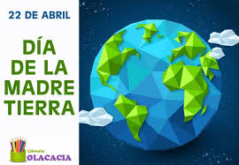
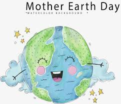

Dia Internacional De la Madre Tierra 22 de Abril

- 

- 


Realizado por:
Luis Cambron Ortega
4 "F"
Especialidad:
Programacion
Submodulo
Desarolla Aplicaiones Moviles
Docente:
Lic. Jose Antonio Gomez Hernandez
4 "F"
Programacion
Desarolla Aplicaiones Moviles
Lic. Jose Antonio Gomez Hernandez
Celebramos el Dia Internacional de la Madre Tierra para recordar que el planeta y sus ecosistemas nos dan vida y el sustento .Con este dia, asumimos, ademas, la responsabilidad colectiva, como nos recoradaba la declaracion de Rio 1992, de fomentar esta armonia con la naturaleza y la Madre Tierra. Este dia nos brinda la oportunidad de concienciar a todos los hbitantes del planeta acerca de los problemas que se afectan a la Tierra y las diferentes formas de vida que en el se desarrollan.
Gaylord Nelson escogió la fecha de tal manera que se maximizara la participación en las universidades, ya que lo consideraba un encuentro entre maestros y alumnos. Determinó que la semana del 19 al 25 de abril era la mejor apuesta, ya que esta no coincidía con los exámenes o las vacaciones de primavera.8 Más aún, esta fecha no tenía ningún conflicto con celebraciones religiosas como la Pascua o el Pésaj, y era demasiado tarde en primavera para tener un clima decente. Más estudiantes preferirían estar en clase y habría menos competencia con otros eventos de media semana –así que eligió el miércoles 22 de abril. El día también coincidió con el aniversario del natalicio de John Muir, notable conservacionista. Sin el conocimiento de Nelson,9 el 22 de abril de 1970 fue, por coincidencia, el centésimo aniversario del natalicio de Lenin, cuando se trasladó al calendario gregoriano, el cual fue adoptado por los rusos hasta 1918.
"Madre Tierra" es una expresión común utilizada para referirse al planeta Tierra en diversos países y regiones, lo que demuestra la interdependencia existente entre los seres humanos, las demás especies vivas y el planeta que todos habitamos. La Tierra y sus ecosistemas son nuestro hogar. Para alcanzar un justo equilibrio entre las necesidades económicas, sociales y ambientales de las generaciones presentes y futuras, es necesario promover la armonía con la naturaleza y el planeta. Celebramos el Día Internacional de la Madre Tierra para recordar que el planeta y sus ecosistemas nos dan la vida y el sustento. Con este día, asumimos, además, la responsabilidad colectiva, como nos recordaba la Declaración de Río de 1992, de fomentar esta armonía con la naturaleza y la Madre Tierra. Este día nos brinda también la oportunidad de concienciar a todos los habitantes del planeta acerca de los problemas que afectan a la Tierra y a las diferentes formas de vida que en él se desarrollan
La gestión integrada de paisajes requiere comprender los diferentes impactos del uso de la tierra y equilibrar los intereses a menudo contradictorios de los diferentes grupos involucrados. Imaginemos que usted forma parte del gobierno del país X en África subsahariana. Desea cumplir con el Objetivo de Desarrollo Sostenible No. 1 que reza: “acabar con la pobreza en todas sus formas en todas partes". Sin embargo, es consciente de la necesidad de implementar todos los 17 Objetivos, incluido el Objetivo 15, que busca: "Gestionar sosteniblemente los bosques, luchar contra la desertificación, detener e invertir la degradación de las tierras y detener la pérdida de biodiversidad.” Imagine que usted tiene una gran extensión de pastizales secos donde casi nadie vive y quiere explotarlos de mejor manera, en beneficio de su gente.